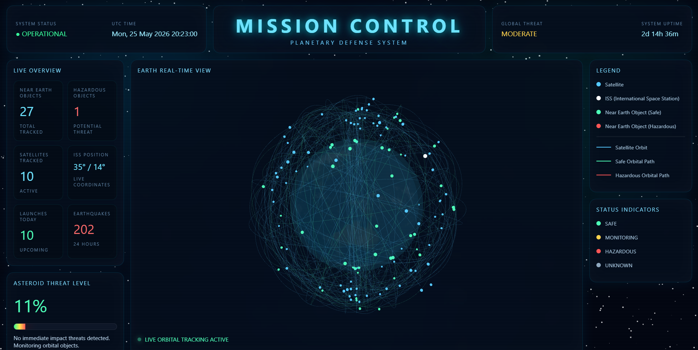

A real-time aerospace intelligence system built as a personal mission-operations center. It aggregates live NASA telemetry, ISS tracking, near-Earth-object monitoring, earthquake feeds, Mars weather, and launch schedules into a single planetary dashboard — built to simulate a real mission-control environment for continuous space awareness.
A unified aerospace monitoring system combining orbital-mechanics visualization, planetary data feeds, and real-world space operations in one immersive interface.
Live ISS positioning and satellite visualization mapped onto a rotating Earth model.
Tracks near-Earth objects from NASA NEO data with hazard classification and velocity analysis.
Upcoming rocket launches, mission timelines, and global aerospace activity at a glance.
A daily aerospace command dashboard for staying current on spaceflight activity, studying orbital systems, and tracking real-time planetary events.
A quick read on ISS position, asteroid activity, and global space events.
Follow upcoming rocket launches and mission schedules in real time.
Reinforces aerospace-engineering concepts through real-world data visualization.
The full interactive dashboard running live with real-time telemetry and orbital visualization.
